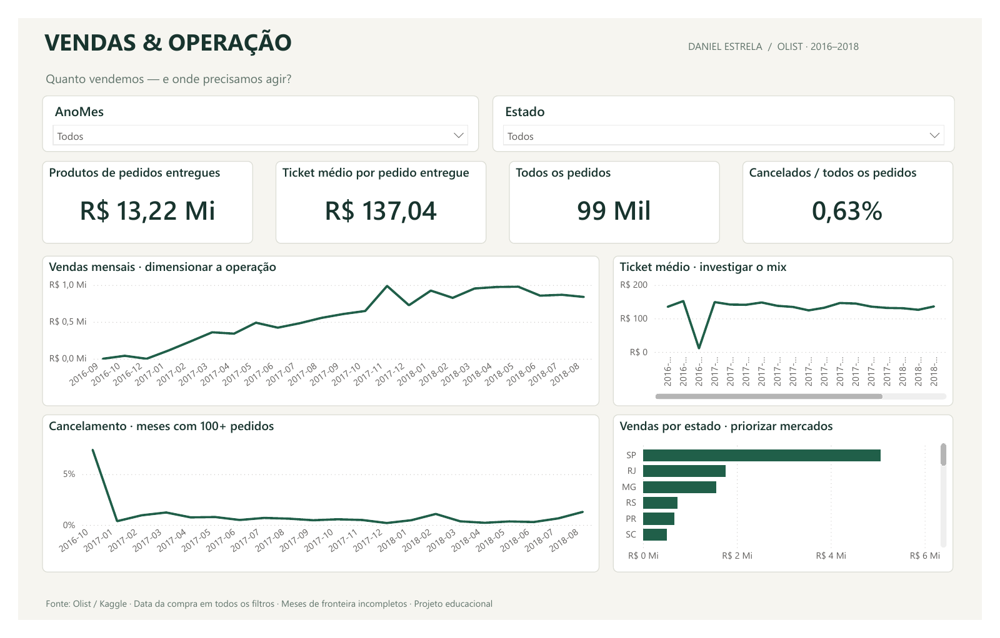
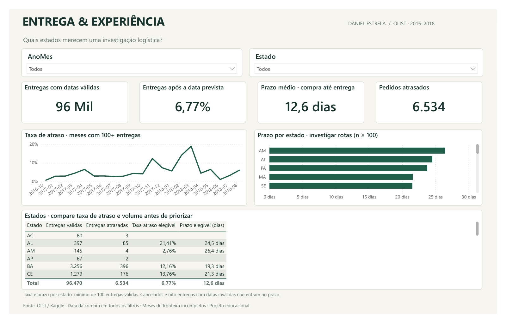

Vendas & operação.
Da métrica à decisão.
Duas páginas para explorar o desempenho comercial e investigar a logística na base histórica da Olist. Modelo estrela, 16 medidas DAX e dados incorporados no arquivo do Power BI.
Esta página apresenta imagens estáticas exportadas do Power BI. Para explorar os filtros e gráficos nativos, baixe o arquivo e abra no Power BI Desktop.
Dimensionar a operação e investigar o mix.
Vendas mensais, ticket médio, pedidos e cancelamentos. Os meses com menos de 100 pedidos ficam fora do gráfico de taxa de cancelamento, mas continuam no indicador geral.

Identificar rotas e períodos para investigação.
Taxa de atraso, prazo médio e detalhamento por estado. A data de referência é a compra. Cancelados não entram nos indicadores de entrega.

Dados históricos de 2016–2018. Vendas significam valor dos produtos de pedidos entregues, sem frete; não representam lucro ou receita líquida. Projeto educacional independente com apoio de IA. Fonte: Olist / Kaggle · CC BY-NC-SA 4.0.